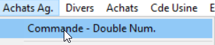
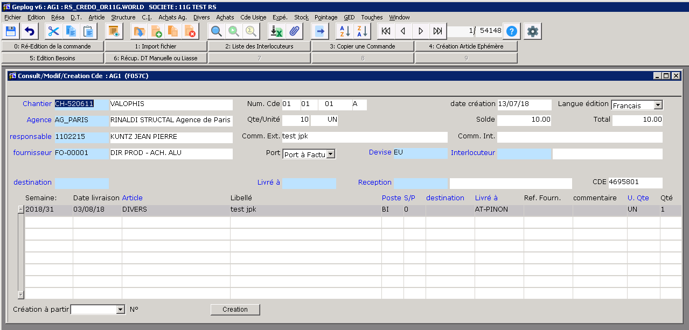
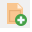

|
GENI AGENCE - Saisie de
commande
|
|
[ Remonter ] [ GENI Agence - saisie cde agence ] [ GENI Agence - saisie cde modules ] [ GENI Agence - Ajout d'un document dans une commande ] [ GENI Agence - Requêtes / Recherches ] [ GENI Agence - FAQ ] [ Codes Article ]
|


A l'arrivée dans cet écran, vous êtes en mode "Interrogation /
query".  la loupe
bleu est visible. la loupe
bleu est visible.
- Vous pouvez saisir une valeur dans l'entête et demander le
résultat de votre recherche en cliquant sur
 ou utiliser le raccourci clavier (Shift+F2)
ou utiliser le raccourci clavier (Shift+F2)
- Pour créer une nouvelle commande,
- sortez du mode "Interrogation / Query"
ou utiliser le raccourci clavier (Shift+F2)
- Cliquez sur l'icone

(F7)
- Complétez l'entête puis les lignes de commande..
note : Il est possible de créer une commande à partir d'un autre
document: réservation, cde fournisseur... voir
ici
Vous avez la possibilité de lier à la commande un document PDF, voir
la page Ajout d'un document dans une commande
agence
La procédure au format PDF.
|
Renseigner les différentes zones de l'entête.
Toutes les zones de couleur bleu ou grisée sont liées à des listes
de choix. Appuyer sur F4
au clavier pour afficher la liste
|
Champ |
Description |
|
CDE |
Numéro de la
commande |
|
Agence |
|
|
Responsable |
votre
matricule |
|
fournisseur |
|
|
Devise |
EUR par
défaut |
|
Port |
|
|
Com Ext. |
Commentaire
qui sera visible sur le document transmis au fournisseur |
|
Com Int |
Commentaire à
usage interne de Rinaldi Structal |
 Vous
pouvez créer la commande a partir d'un
document existant ou la créer intégralement Vous
pouvez créer la commande a partir d'un
document existant ou la créer intégralement
Saisissez les lignes de commande
nota :vous devrez obligatoirement renseigner les zones suivantes
|
Champ |
Description |
|
|
Zone
lignes de commande |
|
ARTICLE |
Code article
géré par le système
pour l'agence il existe une liste d'articles "A décrire" |
|
Libellé |
Éventuellement
modifiable si nécessaire |
|
PU HT |
Prix de
l'article commandé (un prix null ou à zéro est interdit) |
|
CHANTIER |
Le code du
chantier CH-xxxxxx |
|
POSTE |
POSTE défini
pour le suivi analytique du chantier |
|
S/P |
SOUS/POSTE
défini pour le suivi analytique du chantier |
|
LIVRE A |
Lieu de
livraison |
|
|
Zone
cadencement |
|
A livrer le
|
Date de
livraison demandée |
|
Qté
|
Qté demandée |
|
Solde
|
Reste à
livrer |
En fin de saisie, enregistrer vos modifications en appuyant sur la
touche F5
du clavier.
|
Cas de la saisie d'une commande pour l'usine
| Atelier |
Fournisseur |
POSTE
* |
S/P
* |
| Alu |
FO-00001 |
BI |
0 |
| Tôlerie |
FO-00002 |
BI |
0 |
* Sauf avis contraire
|
En fin de saisie, enregistrer vos modifications en appuyant sur la
touche F5
du clavier.
|
|
Il est possible de récupérer les informations d'un document déjà
existant.
En bas de l'écran, vous trouverez une liste déroulante :

- Choisissez le document d'origine
- Cliquez sur le bouton

- Une liste de choix apparaît, saisissez votre numéro de commande
dans la zone Find
- Cliquez sur la ligne de commande
- Cliquez sur OK

- Le programme commence à importer les lignes du document d'origine.
 Si il manque
une information, vous aurez un message d'erreur. Si il manque
une information, vous aurez un message d'erreur.
Complétez la ligne importée (ex: POSTE - SOUS/POSTE )
- Cliquez de nouveau sur le bouton
- Les programme importe le reste des lignes du document d'origine.
|
FAQ
- Dans une commande agence, quelle est la différence entre « destination », « livré à » et « réception » ?
- Même question sur les lignes de commande, on a les colonnes « destination » et « livré à ».
- Et pour la colonne « Réf. Fournisseur », est-ce qu’elle est supposément réservée à des références de pièces sous-traitées (et donc du fournisseur) ou quand ce sont des pièces Rinaldi, c’est mieux de mettre la référence à cet endroit plutôt que dans le libellé ?
Destination : code du contrôle de gestion, principalement utilisé en SAV car les chantiers SAV ne sont pas limités dans le temps
Livré à : le lieu de livraison
Réception : l'interlocuteur qui fait la réception, la liste des interlocuteurs est dans la fiche structure du chantier, du client, ou du fournisseur.
Réf Fournisseur : La référence interne du fournisseur, elle peut être paramétrée dans la fiche article, bouton 5 réf fournisseur.
Pour des articles interne Rinaldi, ce peut être le repère BE. si une ref est indiquée je peux comparer cette ref fournisseur avec le repère de l'article dans geni sans forcément utiliser l'intégralité du code article.
cde agence
code article agence : CHASSS-AD ou autre article _AD.... si vous n'utilisez pas le vrai code du produit.
libellé : un texte explicite, pour l'instant vous notez le repère.
ref fournisseur : REPEREAMOI le repère serait une bonne pratique.
cde usine
code article : MOD_XxX_REPEREAMOI
repère : REPEREAMOI
ref client: REPEREAMOI (modifiable dans la ligne de commande)
|